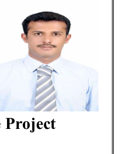

Al Madar First Engineering Consulting Company
Senior Civil Engineer – Road and Infrastructure Design, Riyadh. Project: Road and Street Design Elevation Correction and Redesign for Al-Khair and Uraidh Subdivision Plans.
Senior Civil Engineer | Technical Office Manager
Civil Engineer with over 19 years of professional experience in management, design, supervision, and execution of roads and infrastructure projects across Saudi Arabia and Yemen.

Professional Summary
Ahmed Al Hazami progressed from Site Engineer to Project Manager and Technical Office Manager, with a strong record in government, housing, roads, bridges, and infrastructure projects for entities including the Ministry of Transport, Ministry of Municipal, Rural Affairs and Housing, and National Housing Company (NHC).
His expertise covers engineering design review, road design, shop drawings, as-built drawings, BOQ preparation, quantity surveying, interim payment certificates, contract coordination, technical reporting, and leading multidisciplinary engineering teams.
Saudi Council of Engineers
Membership No. 225894
Professional Civil Engineer
Bachelor of Civil Engineering
Sana'a University, Yemen
Graduation Project: Structural Engineering
Civil Site Design Fundamentals
Civil Site Design Advanced
Experience Certificates
Professional Experience
Senior Civil Engineer – Road and Infrastructure Design, Riyadh. Project: Road and Street Design Elevation Correction and Redesign for Al-Khair and Uraidh Subdivision Plans.
Technical Office Manager. Projects: Ard Al-Irsal Development, East Riyadh and South Dammam Housing Development.
Project Manager. Project: Basic Infrastructure Works – Al-Madain Development, Hail.
Technical Office Manager, Al Qassim. Managed technical office activities for road, bridge, and infrastructure projects.
Project Manager. Projects: Umm Al-Ghiran Road Project (25 km) and Jalil–Marakh Road Project (10 km).
Project Manager. Project: Northern Service Road for Abha–Khamis Mushait Road, Phase II.
Civil Engineer to Project Manager. Managed road projects including Shibrah–Al Kulaybi Road (45 km), Hajjah–Bani Al Awwam Road (35 km), and Amran–Al Sawdah–Al Ahnoum Road (110 km).
Selected Projects
حسب السيرة الذاتية العربية
Core Expertise
Documents
Download the updated English CV, Arabic CV, professional certificates and experience letters.
Available for senior civil engineering, roads, infrastructure, project management, and technical office management opportunities.